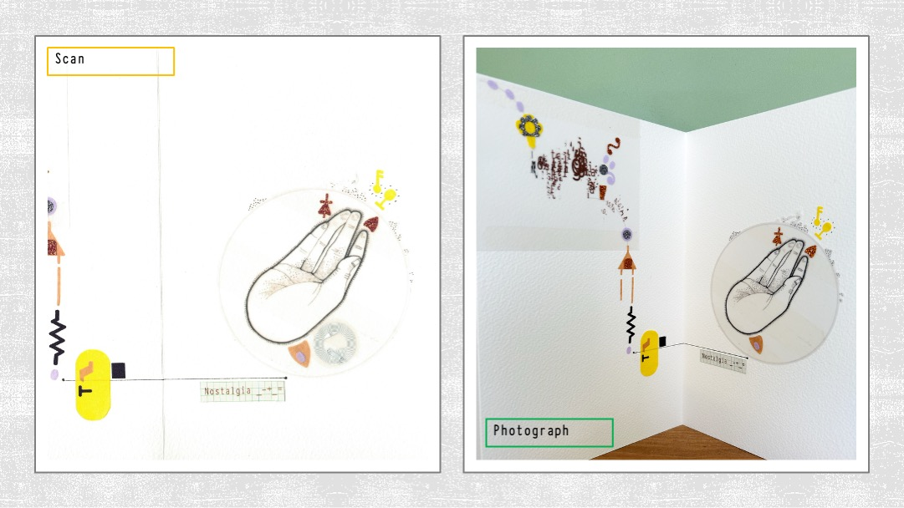
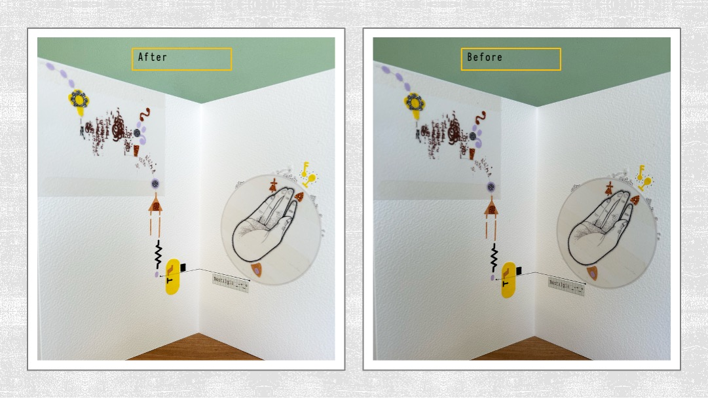

Editing Photos & Scans of Physical Work in Photoshop 🖼️
1️⃣ Capture Your Sketchbook Work
You can record physical pages two ways — both have benefits. Below shows a scanned and a photographed version of the same page.
🖨️ Option A: Scan at College
- Use the college printers/scanners — place your page flat on the glass and close the lid gently.
- Swipe your student card and choose Scan to Email.
- Set resolution to 300 dpi to keep detail sharp.
- Watch for washed‑out paper; pencil or light graphite may scan faintly.
- Scanned files arrive in your inbox — download them to your drive or desktop.
📸 Option B: Photograph Your Pages
- Use soft daylight (not direct sunlight or yellow bulbs).
- Lay the sketchbook flat; stand or mount your phone above it.
- Take several shots and pick the most evenly lit one.
- Photos often capture surface texture that scanners miss.
Best results: combine both approaches — scan for clarity + photograph for texture and depth.

Scan (left) — crisp detail · Photo (right) — texture and depth.
2️⃣ Open and Duplicate Layers
- Open your image in Photoshop.
- Drag the Background layer onto the New Layer icon.
- This keeps a safe original beneath your edits.
3️⃣ Balance Tone with Levels & Curves
- Go to Image → Adjustments → Levels ( Ctrl/Cmd + L ).
- Adjust black and white input sliders until the histogram touches both ends — adds contrast and true white.
- Then use Image → Adjustments → Curves ( Ctrl/Cmd + M ).
- Make a gentle “S” curve for subtle contrast — lift lights and anchor dark tones.
- Maintain natural paper texture (no burnout or crushed shadows).
🎨 Levels recover brightness, Curves refine contrast — apply before colour balancing.
4️⃣ Adjust Light & Colour — Camera Raw Filter
- Choose Filter → Camera Raw Filter…
- Set White Balance = Custom.
- Tweak Temperature (left = cool | right = warm) and Tint (left = green | right = magenta).
- Aim for clean white paper — not over‑bright white.
🪄 Temperature + Tint controls create a natural colour balance — no eyedropper needed.

Before (left) → After (right) · balanced tone & colour.
5️⃣ Place into A3 Layout
- Select with Marquee Tool (M) → Ctrl/Cmd + C / Ctrl/Cmd + V
- Or File → Place Embedded… to insert a full page layer.
- Resize with Ctrl/Cmd + T (Free Transform).
🧩 No need to crop — keep the page whole and frame it later.
6️⃣ Save Clearly
- File → Export → Save for Web (Legacy)
- Select JPEG High Quality (80–90%) for Moodle or Padlet.
- Rename firstname_sketchbook_edit.jpg.
- Keep under 2 MB for upload.
💾 Tip: Save a layered PSD copy so you can re‑edit later.
🎮 Knowledge Check — Editing Photos & Scans